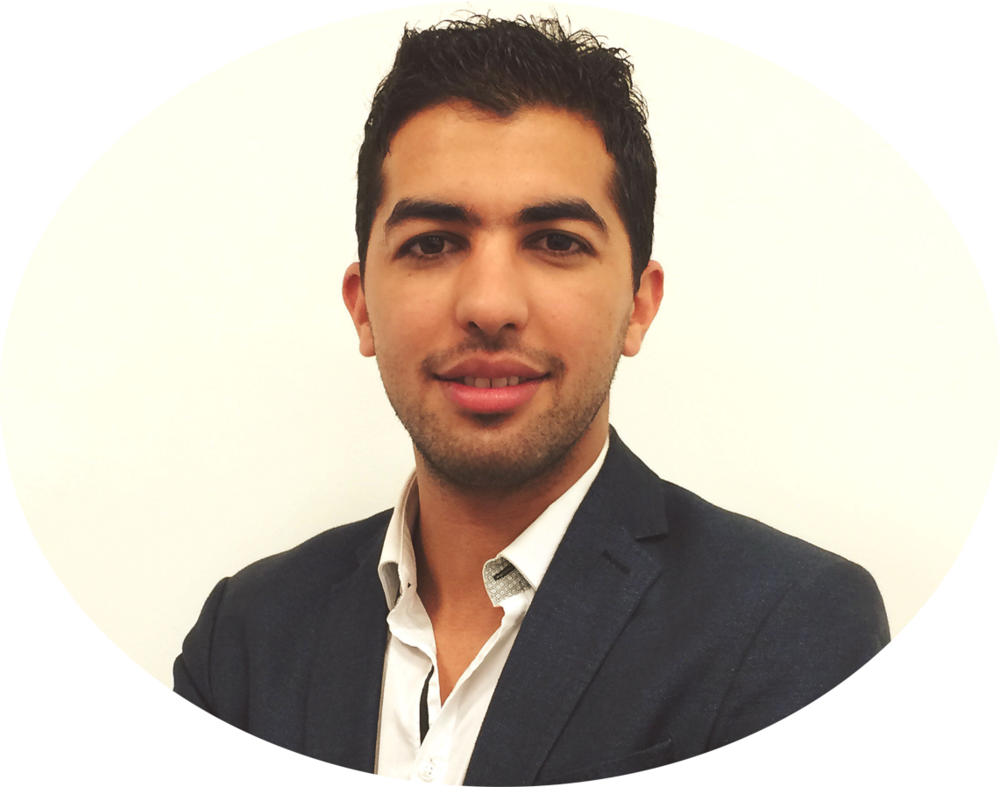

Anass Nouri received the M.Sc. degree in computer science and image processing from the Ibn Tofail university and the university of Poitiers (France) in 2014 and the Ph.D degree in computer science 2017 at the Greyc Laboratory in ENSICAEN (Caen, France) under the supervision of Pr. Olivier Lézoray and Dr. Christophe Charrier in the IMAGE research team. In 2016-2017, he was an assistant professor at the computer science department of the National School of Engineering of Caen (ENSICAEN) associated to the Greyc Lab where he continued its research on 3D colored meshes visual saliency and perceptual quality. In 2017-2018, he was a postdoctoral fellow at the Institut du Thorax Lab (UMR 1087) and RMES Lab (UMR 1229) in the university of Nantes where he was working on the automatic detection and characterization of 3D bifurcations for intracranial aneurysms prediction with Dr. Florent Autrusseau and Dr. Romain Bourcier. In 2018-2019, he was an Associate Professor of computer science at the ISEN school of Engenieering (Institut Supérieur de l’Electronique et du Numérique) and member of the Vision research team of the L@bIsen. Currently, he is an Associate Professor of computer science at Ibn Tofail University of Morocco. He gave lectures in computer programming, image analysis and machine learning. His current research interests include 2D images, 3D mesh/volume processing, visual saliency, objective quality assessment, medical imaging and machine learning.
Anass Nouri
Associate Professor of Computer Science/I.A, Ibn Tofail University, Kénitra/Morocco
